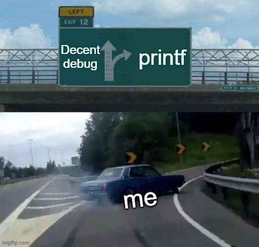
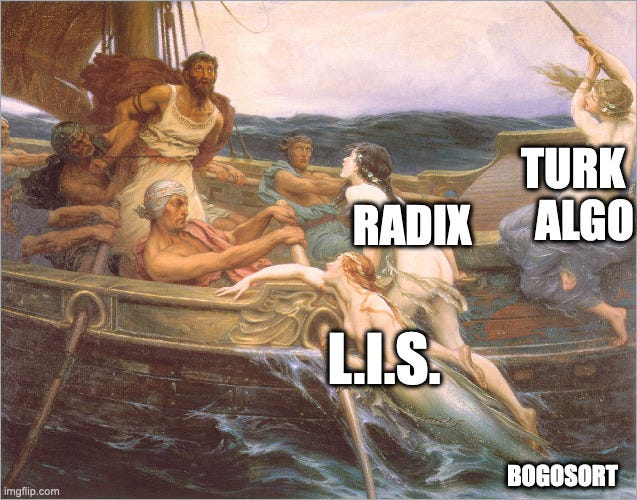
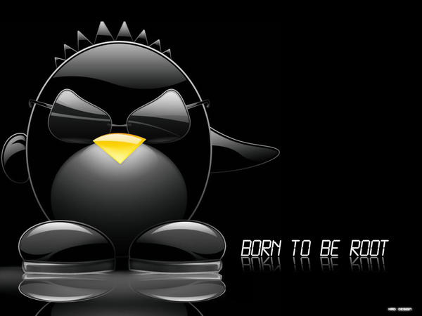
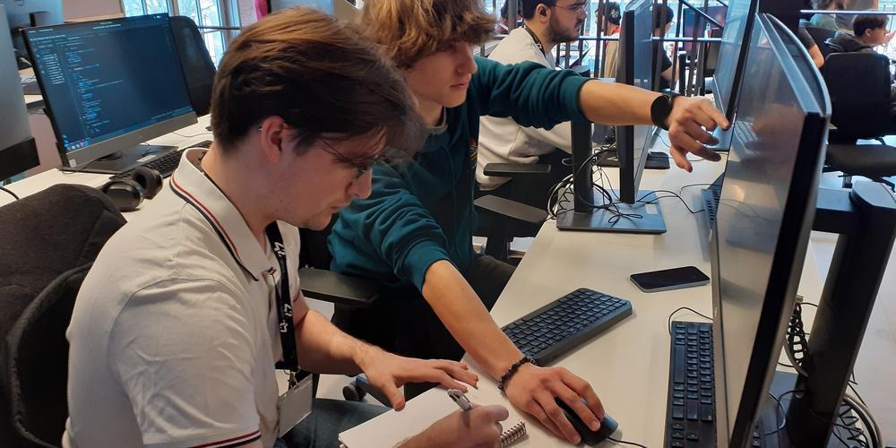

Mes projets

Libft
Recréation de la bibliothèque standard C avec des fonctions essentielles pour la manipulation de chaînes et la gestion mémoire.
C
Makefile
Memory Management

Ft_printf
Implémentation personnalisée de la fonction printf en C, gérant différents types de données et options de formatage.
C
Variadic Functions
String Formatting

Push Swap
Algorithme de tri optimisé utilisant deux piles pour organiser des nombres avec un minimum d'opérations.
C
Algorithms
Optimization
Minitalk
Communication inter-processus utilisant les signaux Unix pour l'envoi et la réception de messages.
C
Unix Signals
IPC

Born2beRoot
Configuration et administration d'un serveur Linux sécurisé avec gestion des utilisateurs et pare-feu.
Linux
Server Admin
Security

Portfolio Personnel
Site web portfolio moderne et responsive développé en HTML/CSS/JavaScript vanilla avec animations et design élégant.
HTML5
CSS3
JavaScript
Responsive